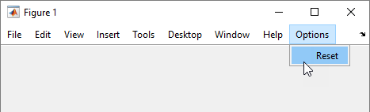

uimenu
Create menu or menu items
Description
m = uimenu creates a menu in the current figure and returns the
Menu object. If there is no figure available, MATLAB® calls the figure function to create one.
m = uimenu( creates the menu in the
specified parent container. The parent container can be a parent)Figure object or
another Menu object.
m = uimenu(___, creates
a menu with property values specified using one or more name-value arguments. Specify
name-value arguments with either of the previous syntaxes.Name,Value)
Examples
Create a figure that displays the default menu bar. Add a menu and a menu item.
f = figure('Toolbar','none'); m = uimenu('Text','Options'); mitem = uimenu(m,'Text','Reset');

Add a menu item with keyboard shortcuts to the menu bar and define a callback that executes when the menu item is selected.
First, create a program file called importmenu.m. Within the
program file:
Create a figure.
Add a menu called Import. Create a mnemonic keyboard shortcut for the menu by specifying
'&Import'as the text label.Create a menu item and specify mnemonic and accelerator keyboard shortcuts.
Define a
MenuSelectedFcncallback that executes when the user clicks the menu item or uses the mnemonic or accelerator keyboard shortcuts.
Run the program file.
function importmenu fig = uifigure; m = uimenu(fig,'Text','&Import'); mitem = uimenu(m,'Text','&Text File'); mitem.Accelerator = 'T'; mitem.MenuSelectedFcn = @MenuSelected; function MenuSelected(src,event) file = uigetfile('*.txt'); end end

You can interact with the menu and menu item, using the keyboard, in the following ways:
Select the Import menu by pressing Alt+I.
Select the Text File menu item and execute the callback by pressing Alt+I+T.
Select the Text File menu item and execute the callback by using the accelerator Ctrl+T.
When you select the Text File menu item, the Select File to Open dialog box opens with the extension field filtered to text files.

Create a checked menu item that can be selected or cleared to show a grid in axes. Share the callback with a push button so that pushing it also shows or hides the grid.
First, create a program file called plotOptions.m. Within the
program file:
Create a figure with a push button, and axes that display a grid.
Add a menu and a menu item with mnemonics. Specify that the menu item is checked.
Define a
MenuSelectedFcncallback that hides or shows the grid when the user interacts with the menu item.Define a
ButtonPushedFcnthat uses the same callback function as the menu item.
Run the program file.
function plotOptions fig = uifigure; ax = uiaxes(fig); grid(ax); btn = uibutton(fig,'Text','Show Grid'); btn.Position = [155 325 100 20]; m = uimenu(fig,'Text','&Plot Options'); mitem = uimenu(m,'Text','Show &Grid','Checked','on'); mitem.MenuSelectedFcn = @ShowGrid; btn.ButtonPushedFcn = @ShowGrid; function ShowGrid(src,event) grid(ax); if strcmp(mitem.Checked,'on') mitem.Checked = 'off'; else mitem.Checked = 'on'; end end end

Input Arguments
Name-Value Arguments
Specify optional pairs of arguments as
Name1=Value1,...,NameN=ValueN, where Name is
the argument name and Value is the corresponding value.
Name-value arguments must appear after other arguments, but the order of the
pairs does not matter.
Before R2021a, use commas to separate each name and value, and enclose
Name in quotes.
Example: m = uimenu('Text','Open') creates a menu and sets its label
to 'Open'.
Note
The properties listed here are a subset of the available properties. For the full
list, see Menu.
Menu label, specified as a character vector or string scalar. This property specifies the label that appears on the menu or menu item.
Avoid using these case-sensitive reserved words: 'default',
'remove', and 'factory'. If you must use a
reserved word, then specify a backslash character before the word. For instance,
specify 'default' as '\default'.
You can specify a mnemonic keyboard shortcut
(Alt+mnemonic) by using the ampersand
(&) character in the text for the label. The character that follows the ampersand
appears underlined in the menu when Alt is pressed. You can select
the menu item by holding down the Alt key and typing the character
shown.
To use mnemonics, you must specify a mnemonic for all menus and menu items that you define in the app. If you define mnemonics only for some menus or menu items, pressing the Alt key does not have any effect.
The table shows some examples:
| Text Value | Menu Label with Mnemonic Hints |
|---|---|
'&Open Selection' |
|
'O&pen Selection' |
|
'&Save && Go' |
|
Keyboard shortcut, specified as a character or as a string that contains one character. Use this property to define a keyboard shortcut for selecting a menu item.
Example: mitem.Accelerator = "H"
Specifying an accelerator value enables users to select the menu item by pressing a character and another key, instead of using the mouse. The key sequence is platform specific.
Windows® systems: Ctrl+
acceleratorMacintosh systems: Command+
acceleratorLinux® systems: Ctrl+
accelerator
Things to keep in mind when using accelerators:
The app window must be in focus when entering the accelerator key sequence.
Accelerators cannot be used on top-level menus.
Accelerators only work when the menu item meets all these criteria.
It does not contain any submenu items.
It executes a callback function.
It has the
Visibleproperty set to'on'.Its accelerator value is not already assigned to a different active menu item in the same app.
Menu selected callback function, specified as one of these values:
A function handle.
A cell array in which the first element is a function handle. Subsequent elements in the cell array are the arguments to pass to the callback function.
A character vector containing a valid MATLAB expression (not recommended). MATLAB evaluates this expression in the base workspace.
For more information about specifying a callback property value as a function handle, cell array, or character vector, see Specify a Callback Function.
The callback responds depending on the location of the menu item and the type of interaction:
Left-clicking a menu expands that menu and triggers its callback.
While any menu is expanded, pausing on any other parent menu (or top-level menu) expands that menu and triggers its callback.
Note
Do not use a callback to dynamically change menu items. Deleting, adding, and
replacing menu items in a callback can result in a blank menu. Instead, use the
Visible property to hide or show menu items. You can also
enable and disable menu items by setting the Enable property.
To fully repopulate menu items, delete and create them outside the callback.
Menus Associated with Context Menus
When the menu component is associated with a context menu (as opposed to a menu
item at the top of a figure window), this callback function can access specific
information about the user's interaction with the app. MATLAB passes this information in a MenuSelectedData
object as the second argument to your callback function. In App Designer, the
argument is named event. You can query the object properties
using dot notation. For example, event.ContextObject returns
information about which component the user right-clicked to open the associated
context menu.
Note
You can specify a MenuSelectedFcn callback for any
Menu object. However, the
MenuSelectedData object in the callback event data is
available only when the context menu that the menu belongs to is associated with
a UI component (as opposed to a graphics object, such as an
Axes or Line object), or is associated
with a container that contains only UI components.
This table lists the properties of the MenuSelectedData
object.
| Property | Value |
|---|---|
ContextObject | Object that the app user right-clicked to open the context menu |
InteractionInformation | Information about where in the component the app user
right-clicked to open the context menu. This information is
stored as an object with different properties depending on the
value of For
example, if |
Source | Context menu object that executes the callback |
EventName | 'MenuSelected' |
This table lists the properties of the InteractionInformation
object. The properties depend on which object the app user right-clicked to open the
context menu.
ContextObject | InteractionInformation Property | Value |
|---|---|---|
| Any | Location | Location where the user right-clicked relative to the
bottom-left corner of the parent container of the
The
value of |
ScreenLocation | Location where the user right-clicked relative to the
bottom-left corner of their primary display, returned as a
two-element vector of the form The value of | |
Table | DisplayRow | Row that the user right-clicked as it appears visually in the table, returned as a numeric scalar. If the user
has not sorted the table, then |
DisplayColumn | Column that the user right-clicked as it appears visually in the table, returned as a numeric scalar. If the
user has not rearranged the table, then
| |
Row | Row that the user right-clicked as it corresponds to the original table data, returned as a numeric scalar. If the user has not sorted the table, then
| |
Column | Column that the user right-clicked as it corresponds to the original table data, returned as a numeric scalar. If the user has not rearranged the table,
then | |
RowHeader | Whether the user right-clicked the table row header, returned as
a logical 0 (false) or
1 (true). | |
ColumnHeader | Whether the user right-clicked the table column header, returned
as a logical 0 (false) or
1 (true). | |
Tree | Node | Right-clicked node, returned as a
If the user
right-clicked an area of the tree that is not associated with a
node, then |
Level | Level of the right-clicked node, returned as a numeric
scalar. Nodes parented directly to the If the user right-clicked an
area of the tree that is not associated with a node, then
| |
ListBox | Item | Index of the right-clicked list box item, returned as a numeric scalar. If the user right-clicked an area of
the list box that is not associated with an item, then
|
Separator line mode, specified as 'off' or
'on', or as numeric or logical 1
(true) or 0 (false). A
value of 'on' is equivalent to true, and
'off' is equivalent to false. Thus, you can
use the value of this property as a logical value. The value is stored as an on/off
logical value of type matlab.lang.OnOffSwitchState.
Setting this property to 'on' draws a dividing line above the
menu item.
Note
The Separator property is ignored when the menu item is a
top-level menu item.
Menu check indicator, specified as 'off' or
'on', or as numeric or logical 1
(true) or 0 (false). A
value of 'on' is equivalent to true, and
'off' is equivalent to false. Thus, you can
use the value of this property as a logical value. The value is stored as an on/off
logical value of type matlab.lang.OnOffSwitchState.
Setting this property to 'on' places a check mark next to the
corresponding menu item. Setting it to 'off' removes the check
mark. You can use this feature to show the state of menu items that enable or disable
functionality in your application.
Note
The Checked property is ignored when the menu item is:
A top-level menu item
A menu item that contains one or more child menu items